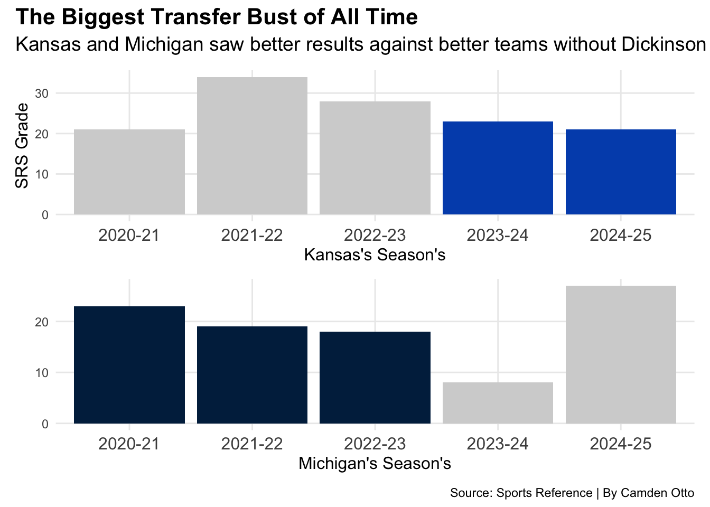

Code
library(tidyverse)
library(patchwork)
library(dplyr)
library(ggalt)
library(ggtext)
library(waffle)
library(gt)
HDPerGame <- read_csv("Project 1 Data/Project 1 Data - Dickenson Per Game.csv")
HDPer40M <- read_csv("Project 1 Data/Project 1 Data - Dickenson Per 40 Min.csv")
HDPer100P <- read_csv("Project 1 Data/Project 1 Data - Dickenson Per 100 Poss.csv")
HDadv <- read_csv("Project 1 Data/Project 1 Data - Dickenson Advanced.csv")
HDtotals <- read_csv("Project 1 Data/Project 1 Data - Dickenson Totals.csv")
S2020.21 <- read_csv("Project 1 Data/Project 1 Data - 2020-21 Full Team Season Stats.csv")
S2021.22 <- read_csv("Project 1 Data/Project 1 Data - 2021-22 Full Team Season Stats.csv")
S2022.23 <- read_csv("Project 1 Data/Project 1 Data - 2022-23 Full Team Season Stats.csv")
S2023.24 <- read_csv("Project 1 Data/Project 1 Data - 2023-24 Full Team Season Stats.csv")
S2024.25 <- read_csv("Project 1 Data/Project 1 Data - 2024-25 Full Team Season Stats.csv")
KU.Record.History <- read_csv("Project 1 Data/Project 1 Data - KU Record History.csv")
MU.Record.History <- read_csv("Project 1 Data/Project 1 Data - Michigan Record History.csv")
KU.MU.Record.History <- read_csv("Project 1 Data/Project 1 Data - KU vs MU Record.csv")
KU <- KU.MU.Record.History |> filter(Team =="KU", Season != "2025-26")
MU <- KU.MU.Record.History |> filter(Team =="Michigan", Season != "2025-26")
KU24.25 <- KU |> filter(Season == "2024-25")
KU23.24 <- KU |> filter(Season == "2023-24")
MU20.21 <- MU |> filter(Season == "2020-21")
MU21.22 <- MU |> filter(Season == "2021-22")
MU22.23 <- MU |> filter(Season == "2022-23")
KUBar <- ggplot() +
geom_bar(data=KU, aes(x=Season, weight=`C. Wins`), fill = "lightgrey") +
geom_bar(data=KU24.25, aes(x=Season, weight=`C. Wins`), fill = "#0051ba") +
geom_bar(data=KU23.24, aes(x=Season, weight=`C. Wins`), fill = "#0051ba") +
theme_minimal() +
labs(
x="Kansas's Season's",
y="SRS Grade"
)
MUBar <- ggplot() +
geom_bar(data=MU, aes(x=Season, weight=`C. Wins`), fill = "lightgrey") +
geom_bar(data=MU20.21, aes(x=Season, weight=`C. Wins`), fill = "#00274C") +
geom_bar(data=MU21.22, aes(x=Season, weight=`C. Wins`), fill = "#00274C") +
geom_bar(data=MU22.23, aes(x=Season, weight=`C. Wins`), fill = "#00274C") +
theme_minimal() +
labs(
x="Michigan's Season's",
y=" "
)
KUBar / MUBar +
plot_annotation(
title = "The Biggest Transfer Bust of All Time",
subtitle = "Kansas and Michigan saw better results against better teams without Dickinson",
caption = "Source: Sports Reference | By Camden Otto"
) &
theme(
plot.title = element_text(size = 16, face = "bold"),
axis.title = element_text(size = 12),
plot.subtitle = element_text(size=14),
panel.grid.minor = element_blank(),
axis.text.x = element_text(size=12)
)